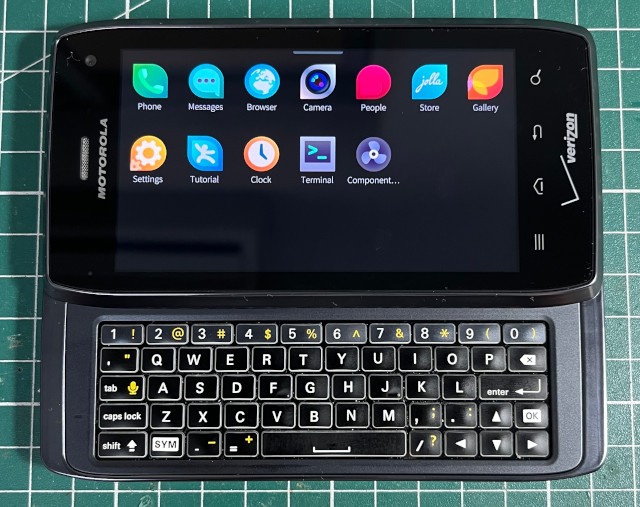

參考資訊：
https://github.com/NotKit/sailfishos-maserati-ci
https://guidelinuxphone.wordpress.com/droid4-ubuntu-bring-up-rootfs/
https://xdaforums.com/t/rom-link-sailfish-os-droid-4-maserati.3777424/
步驟如下：
1. 下載檔案
$ sudo apt-get install fastboot $ cd $ wget https://maedevu.maemo.org/images/droid4/VRZ_XT894_9.8.2O-72_VZW-18-8_CFC.xml.zip $ wget https://maedevu.maemo.org/images/droid4/flash-droid-4-fw.sh $ wget https://github.com/steward-fu/website/releases/download/xt894/droid4-kexecboot.img $ wget https://github.com/steward-fu/website/releases/download/xt894/utags-mmcblk1p13.bin $ unzip VRZ_XT894_9.8.2O-72_VZW-18-8_CFC.xml.zip
2. 按住電源 + 音量上 + 音量下，選擇進入Fastboot模式
3. 安裝Kexecboot
$ pushd VRZ_XT894_9.8.2O-72_VZW-18-8_CFC.xml $ bash ../flash-droid-4-fw.sh $ popd $ fastboot flash mbm VRZ_XT894_9.8.2O-72_VZW-18-8_CFC.xml/allow-mbmloader-flashing-mbm.bin $ fastboot reboot-bootloader $ fastboot flash bpsw droid4-kexecboot.img $ fastboot flash utags utags-mmcblk1p13.bin $ fastboot reboot
4. Root系統
5. 安裝Safestrap-maserati-v3.75-altpart.apk
6. 進入Saftboot後，刷入如下檔案：
https://github.com/steward-fu/website/releases/download/xt894/cm-11-20160104-UNOFFICIAL-maserati.zip https://github.com/NotKit/sailfishos-maserati-ci/releases/download/release-devel-4.5.0.24-build1/sailfishos-maserati-release-4.5.0.24-build1.zip
完成
